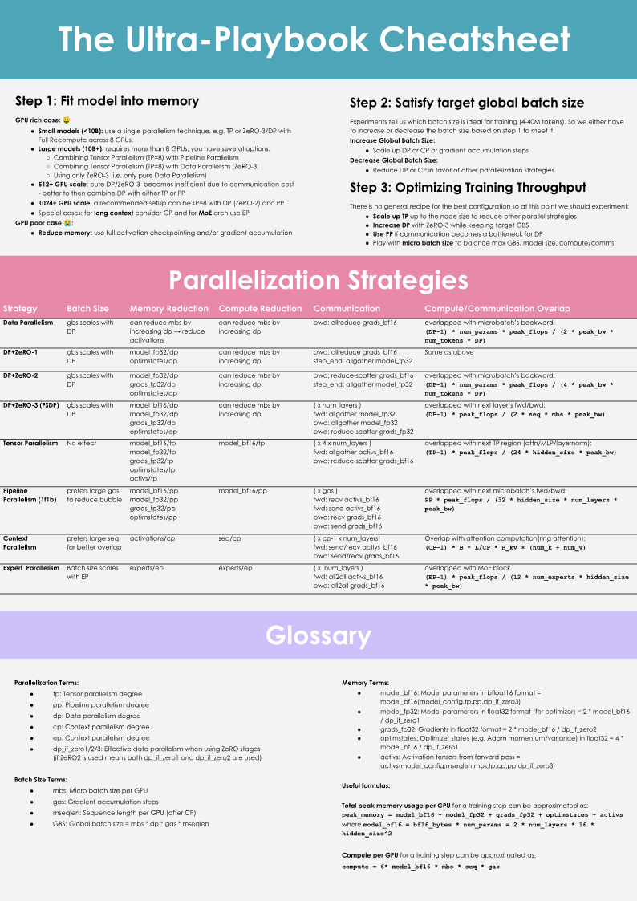

想在集群上把大模型训起来, 第一步不是抢几百张卡, 而是先算清一张卡装得下多少。这本由nanotron发的Ultra-Scale Playbook用『从头能背』的方式讲显存：参数/梯度/优化器态每字节可估, 激活一条近似公式, 再用激活重算+梯度累积两件工具把『单卡不够』抬过去。系列第1/6, 到data parallelism门口。
书中大量结论伴随可交互曲线/音频等媒体, 公众号无法承载者均以文字转述其要表达的结论, 不做静态造假。
写这本书(nanotron的Ultra-Scale Playbook：训练LLM on GPU clusters)时，几乎每个技巧都在跟同三道坎缠斗：①显存占用：硬约束，训练步装不进显存就根本没法训；②算力效率：让硬件多数时间在计算，而不是耗在传数据或等别卡干活；③通信开销：通信让GPU空等，得尽量把intra-node的快速带宽用足、把通信和计算尽量重叠。而且这三者能互相换(如recomputation、Tensor Parallelism都是用别项成本换)：大模型训练的第一步，其实是找一个平衡，不同tradeoff正是量表全书主线。
这本书作者按自己4000多次扩展实验(超跑30+ 模型规模、含DeepSeek/LLaMA工作流)写就，有一个整书速查cheat sheet随时对照全书地图(如下图)。

把任务缩小到单GPU：训练典型就是(1)前向(把输入过一遍模型得到输出)/(2)反向(算出梯度)/(3)用梯度做一次优化步更新参数。前四个细节步后面再看。
batch size是好胜的关键且同时影响收敛与吞吐：训练早期小batch能快速跨过地形到较优学习点;往后小batch会让梯度吵、难以收敛到最优;而过大batch梯度估计准、却每个token用处变低、浪费计算又收敛慢(可看OpenAI large batch paper与MiniMax-01 §4.2)。另一个视角是影响耗时：同等样本小batch要多做优化步，而优化步很贵。所幸在最优附近batch size往往有较宽的平稳区，别太敏感。LLM预训练里习惯用token计(bs_t)：bst=bs×seq。近年大模型甜点区大概每batch 4–60M tokens：LLaMA系列 ~4M(tok over ~4.3T tokens)，DeepSeek系列 ~60M(14T)。
Scale到这几个数量级batch时，第一个挑战已逼到眼前：显存不够(OOM)。问题不在网络，而是训练一个大batch需要的内存。于是得先弄清训练到底把什么放进显存。
训练时显存主要放四种：模型权重、梯度、优化器状态、以及算梯度要用的激活。精确算有点难因为CUDA内核一般再占1-2GB、还有内存碎片之类：通常当小常数忽略。
张量以不同shape与精度存放。shape由batch size、seq、hidden、head、vocab等超参决定;精度FP32/BF16/FP8逐值分别4/2/1字节。于是：参数量(简单transformer)N≈h·v+L·(12h²+13h)+2h(hidden=h, vocab=v, 层数=L)。h² 项随规模二次增长、必将主导。全精度(FP32)下：权重m=4N、梯度4N；Adam优化器需存一阶矩momentum+二阶方差variance，各4N → m_opt=8N。
混合精度(mixed precision，现代默认)不是把全部存成低精度就完，而是用BF16做主计算(每参2B)、外加一份FP32的权重与梯度主副本(每参4B×2)，所以参数/梯度其实 占用2N+2N(p32主副本)…下面总结一表。
参数/梯度/优化器态的每参数字节账（N=参数量）：FP32训练 → params 4N、grad 4N、opt(Adam) 8N；BF16+FP32主副本(无FP32梯度累加)→ params 2N、grad 2N、params_fp32 4N、opt 8N → 合计16N…(注：有些库另把梯度也存FP32以稳小值，如nanotron，那样再加4N。)
于是单卡一B就16GB、7B约112GB、70B约1120GB、405B约6480GB（若梯度也FP32累加则更大）：到7B就明显超过单卡(S80GB H100)容量。这还没算激活。
激活不像权重好精确估，因它取决于输入。守恒推算可得每一层都要存，以及最后激活数混合精度的近似：m_act≈L·seq·bs·h·(34 + 5·n_heads·seq/h)。要点是公式里它对seq二次、对bs一次：也就是说激活是最容易被batch/长序列吹爆的那一块(曲线比如Llama、bs=1：短序列几近可忽略，到seq≈2-4k就显著;大batch/长seq时激活反超参数成为最大负担)。
(这套公式追到NVIDIA recomputation论文对每op之间中间张量逐项核算。也提醒：显存占用不是静态，而是随训练动态变化。)
把前向里某些激活丢掉省显存、反向时多花一点算力现场重算。思路：无重算时每个可学算子之间的hidden state都存以算梯度;重算则只存少数关键点，其余反向时从最近的关键点重新各前向一段来换算力。策略：①Full：每个Transformer层交界处都checkpoint，反向时等于每层多走一次前向，省最多但计算最贵(整体compute增加约30-40%，很肉痛)；②Selective：原论文逐项分析谁长最大/谁能用最便宜FLOP重算，发现attention属此类可丢，专注存贵重的feedforward：对GPT-3(175B)约省70% 激活显存、只 +2.7% 计算。DeepSeek-V3用所谓MLA进一步把attention激活占得更小做selective。
FlashAttention当代框架多已经「原生」做了激活重算(recompute attention scores)，所以用FlashAttention的人等于已在做selective recomputation。注意重算会稍增FLOPs但显著降内存访问：在像GPU这种内存访问通常比计算慢的硬件上，整体常常反而更快。衡量效率时有两个指标要看：把重算也算进去的是Hardware FLOPS Utilization(HFU)，只算模型fwd/bwd必要算子的是Model FLOPS Utilization(MFU)：比硬件时若一卡靠内存够大能跳过重算以获得更快完训时间，该被认可而不该因低HFU被罚，因此MFU更贴模型本身。
很直白的省显存法：把大batch拆成多个micro-batch(mbs)，逐个做前反向、把梯度都累起来，各micro梯度求和(实际再除以累积步数取均值以与步数无关)后做一次优化步；优化步间隔的总量叫global batch size(gbs)，且gbs=mbs×grad_acc。它的价值：global batch可以想多大多大而显存恒定;也与激活重算叠加。代价(no free lunch)：一批内要做多次连续前/反向，纯计算开销更高、训练变慢。
可你马上会发现：这些micro-batch的前/反向彼此独立(只差输入样本不同)：那它们其实可以并行！是时候把训练搬到不只一块GPU上，进入data parallelism了。在这之前还有个口袋里常年有用的工具：profiler(如torch.profiler看CPU线程异步launch kernel、多CUDA stream并行处理计算与通信、kernel时长与显存分配，帮判定能否把梯度同步与反向重叠等)，本章末尾引出：data parallelism本质上只是gradient accumulation的并行版。
参考：https://huggingface.co/spaces/nanotron/ultrascale-playbook